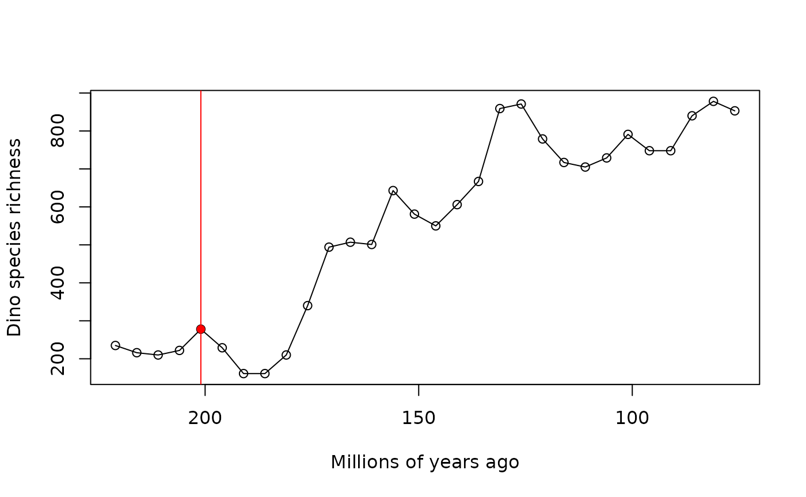
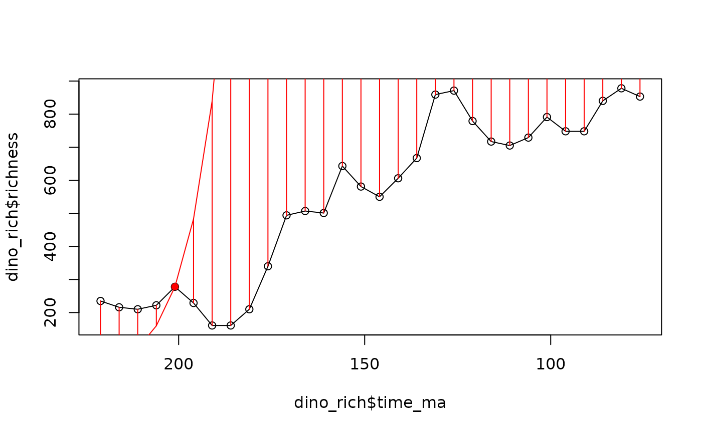
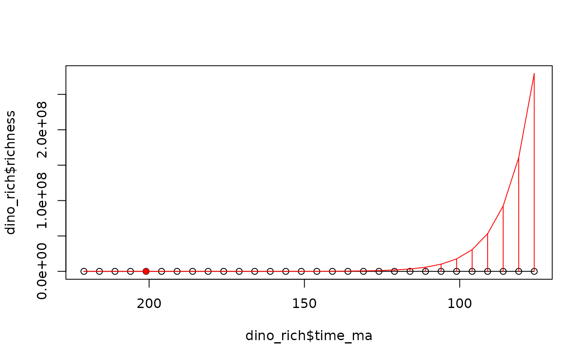
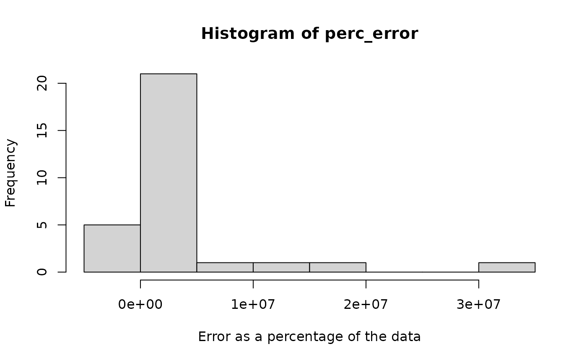

Birth-death models and deep time
Matheus Januario, Andressa Viol, and Daniel Rabosky
Jan 2024
Source:vignettes/birthdeath_deeptime.Rmd
birthdeath_deeptime.RmdLearning objectives
- The birth-death (BD) model
- Deterministic expectations of the birth-death model
- Estimation under the simple birth-death
- Effects of variation on the net diversification rate
- The birth-death model is a stochastic process
- Adding in extinction
- Age-richness models and empirical richness through time
Introduction
Today we will work with the main mathematical model used in diversity dynamics: the birth-death model. The main idea of the model is simple: at any instant in time, species can (I) split into two, (II) go extinct, or (III) do nothing. The model can be fully described (i.e. parameterized) by the rate of speciation (the “births”) and the rate of extinction (the “deaths”).
The birth-death (BD) model
The birth-death model is a simple stochastic process that is widely used to quantitatively study diversification (speciation and extinction). It is used in other contexts as well, as in ecology or in physics.
The birth-death model we will use here has two parameters: , the rate of speciation (the rate at which one species will split into two species), and the rate of extinction. Usually, these rates are “per capita” (or “per lineage”), meaning that the total rate of speciation for a clade of N species would be and for extinction.
The compound parameter is known as the net diversification rate: it is the rate at which new species are produced, minus the rate at which they go extinct. If , the net production of new species is positive and the clade tends to increase exponentially in diversity through time. When , the clade will lose species through time on average, meaning the clade will be strongly biased to go extinct.
Deterministic expectations of the BD model
The expected species richness under the birth-death model is:
where is the starting number of species, is the elapsed time, and is the number of species at time . This is just a simple exponential growth model that you’ve seen before (recall the intro to popgen vignette, where we discussed Malthusian growth), except now we are dealing with the birth and death rates of species and not individuals.
Estimation under the simplest BD
Let’s imagine that we are interested in the diversification of mammals, which currently have around 5500 extant species. Can we estimate how fast mammals diversified through time?
Assume that we know that the first of all mammals existed million years ago. At this time point, there were species in this group. Thus, we initiate a model where , , and . What is our estimate of ?
We can make a simple estimator for the net diversification rate under the birth-death process just by rearranging equation (1) above. We start with:
and solve for R, giving:
The birth-death model is a stochastic process
Let’s imagine that the we’ve computed for mammals in Q3 is in fact the true . What if we replayed the tape of life for mammals many times, allowing the clade to diversify over and over again (always starting from only one species). Do you think we would get the exact same number of species every time?
To explore this, we will simulate evolutionary histories of mammals under our value of .
Fundamentally, the birth-death process is stochastic. We’ve been speaking of and as rates, but it is more appropriate now to think of them as relative probabilities – the relative probabilities that each species alive in the simulation will either split into two or die, respectively.
Simulating the birth-death process is very easy, but the details involve some basic probability theory and calculus that go beyond the scope here. So, we have given you a function that simulates the number of species in a clade, given a set of parameters.
To simulate a single evolutionary history starting with species, for million years, with and no extinction (i.e. ), we should type:
simulateBirthDeathRich(t = 10, S = 1, E = 0)## [1] 14759Try it yourself: Simulate a history of mammals using the function
simulateBirthDeathRich(). Did you get something close to
the true value of 5500 species?
Adding in extinction
In previous exercises, we have been ignoring extinction by setting . But the fossil record tells us that the extinction rate has been nearly equal to the speciation rate for much of the history of mammals. So, let’s assume that E is 99% of the speciation rate, or K = E/S = 0.99.
Age-richness models and empirical richness through time
Now, we will apply this method to a real richness curve, and compare our estimates with actual data. We will use the dataset provided by Rabosky & Benson (2021).
First we will read in our data.
data("timeseries_fossil")We can select among many possible clades to run our analysis:
unique(timeseries_fossil$clade)## [1] "anth" "art" "biv" "bryo" "ceph"
## [6] "chon" "crin" "ech" "gast" "ling"
## [11] "ostr" "tril" "foram" "graptoloids" "dinosauria"anth = Anthozoan corals
art = Articulata (an extant subclass of “sea lilies” and
“feather stars” within Echinodermata)
biv = Bivalve mollusks
bryo = Bryozoans
ceph = Cephalopod mollusks
chon = Cartilaginous fishes
crin = The extinct “sea lilies” and “feather stars”
ech = Sea urchins
gast = Gastropod mollusks
ling = A class of brachiopods
ostr = A class of Crustaceans
tril = Trilobites
foram = Foraminifers
dinosauria = Non-avian, extinct dinosaurs
graptoloids = An extinct group of colonial animals
What we will do is fit a birth-death model to a clade’s diversification trajectory, but instead of using the present as the reference point for , and calculating the diversity trajectory up to the present day, we will choose an arbitrary point in the past and use it as a reference point instead. This will allow us to then project our birth-death model to the actual present, and see if the model can properly predict how diversity has changed since our arbitrary reference point in the past.
To do this, we will do the following:
Step 1: Choose a dataset.
# Here we will use dinosaurs:
dino_rich <- timeseries_fossil[timeseries_fossil$clade=="dinosauria",]
head(dino_rich)## clade source stem_age rel_time time_ma richness
## 569 dinosauria Benson2016 251.9 175.9 76 853
## 570 dinosauria Benson2016 251.9 170.9 81 878
## 571 dinosauria Benson2016 251.9 165.9 86 840
## 572 dinosauria Benson2016 251.9 160.9 91 748
## 573 dinosauria Benson2016 251.9 155.9 96 748
## 574 dinosauria Benson2016 251.9 150.9 101 791Step 2: Choose a point in time for which we have data.
unique(dino_rich$time_ma)## [1] 76 81 86 91 96 101 106 111 116 121 126 131 136 141 146 151 156 161 166
## [20] 171 176 181 186 191 196 201 206 211 216 221
# We will use the early Jurassic, around 201 Mya, as our reference for this analysis
t_obs <- 201
rich_early_J <- dino_rich$richness[dino_rich$time_ma==t_obs]
# species richness from this time point
rich_early_J## [1] 278
# plotting our data and our point of observation:
plot(x = dino_rich$time_ma,
y=dino_rich$richness,
xlim=c(max(dino_rich$time_ma), min(dino_rich$time_ma)),
xlab = "Millions of years ago", ylab = "Dino species richness")
# connecting the dots:
lines(x = dino_rich$time_ma,
y=dino_rich$richness)
# highlighting the point we will pick:
points(x=t_obs, y=rich_early_J, col="red", pch=16)
abline(v=t_obs, col="red")
Step 3: Estimate R using the methods above.
As we saw above, to estimate R, we need to know , , and . Let’s use our arbitrary reference time point, 201 Mya, as the ‘present’, and calculate values for these terms.
# Richness at the stem age of the dinosaurs:
rich_0 <- 1
# The start age of our clade marks time 0 for diversification:
t0 = dino_rich$stem_age[1]
# Since we now know N_t, N_0, and the elapsed time, calculate R:
R_dino = (log(rich_early_J) - log(1)) / (t0 - t_obs)
R_dino## [1] 0.1105623
# Plot our data and project the richness since the beginning of our time series:
time_from_t0 = t0 - dino_rich$time_ma
projected_rich = rich_0 * exp(R_dino * time_from_t0)
# Finally, we calculate the difference between our projections and the data:
projected_rich-dino_rich$richness## [1] 2.793303e+08 1.607067e+08 9.245907e+07 5.319421e+07 3.060391e+07
## [6] 1.760699e+07 1.012955e+07 5.827550e+06 3.352453e+06 1.928400e+06
## [11] 1.109044e+06 6.377082e+05 3.667199e+05 2.107627e+05 1.210567e+05
## [16] 6.938300e+04 3.960939e+04 2.265741e+04 1.281673e+04 7.171539e+03
## [21] 4.070215e+03 2.327329e+03 1.298801e+03 6.788675e+02 2.542010e+02
## [26] -5.684342e-14 -6.205826e+01 -1.179807e+02 -1.630585e+02 -2.045412e+02
# Plotting the difference between our projections and the data:
plot(x = dino_rich$time_ma,
y=dino_rich$richness,
xlim=c(max(dino_rich$time_ma), min(dino_rich$time_ma)),
)
# Connecting the dots:
lines(x = dino_rich$time_ma,
y=dino_rich$richness)
# Highlighting our point of observation again:
points(x=t_obs, y=rich_early_J, col="red", pch=16)
# Now, we will add the predicted richness curve based on our estimations:
lines(x = dino_rich$time_ma,
y=projected_rich, col="red")
#Finally, we plot the differences between our projections and our data using bars:
segments(x0 = dino_rich$time_ma,
x1 = dino_rich$time_ma,
y0 = dino_rich$richness,
y1 = projected_rich,
col="red")
The current axis scale does not allow us to properly visualize the discrepancy between our prediction and the data. So let’s plot again, re-scaling the y-axis:
#we can plot the data again, this time with extra care with the scale of our axes:
plot(x = dino_rich$time_ma,
y=dino_rich$richness,
xlim=c(max(dino_rich$time_ma), min(dino_rich$time_ma)),
#we will change the y-axis limits to fit all our calculations:
ylim=c(
min(c(dino_rich$richness, projected_rich)),
max(c(dino_rich$richness, projected_rich))),
)
#connecting the dots:
lines(x = dino_rich$time_ma,
y=dino_rich$richness)
#highlighting our observation point:
points(x=t_obs, y=rich_early_J, col="red", pch=16)
#adding the predictions of the model:
lines(x = dino_rich$time_ma,
y=projected_rich, col="red")
#Finally, we plot the differences between our projections and our data using bars:
segments(x0 = dino_rich$time_ma,
x1 = dino_rich$time_ma,
y0 = dino_rich$richness,
y1 = projected_rich,
col="red")
What do you think? Does this model fit our data well?
Now, let’s divide the error of our estimates by the actual data to determine what the scale of our error is, in terms of a percentage.
perc_error <- (projected_rich - dino_rich$richness)/dino_rich$richness * 100
min(perc_error)## [1] -87.03881
max(perc_error)## [1] 32746816
hist(perc_error, xlab = "Error as a percentage of the data")
Some food for thought:
What do you think of an estimator that can underestimate by 87% or can overestimate the data by 32,746,816%?
How many species of dinosaurs does this model predict immediately before the asteroid impact (mass extinction) at the K-Pg boundary?
proj_rich_dinos_KPg <- (R_dino +1)^(dino_rich$stem_age[1]-66)
proj_rich_dinos_KPg## [1] 292704971What do you think of this estimate? Before answering, consider that current estimates for the total number of species on Earth are fewer than 10 million species overall.